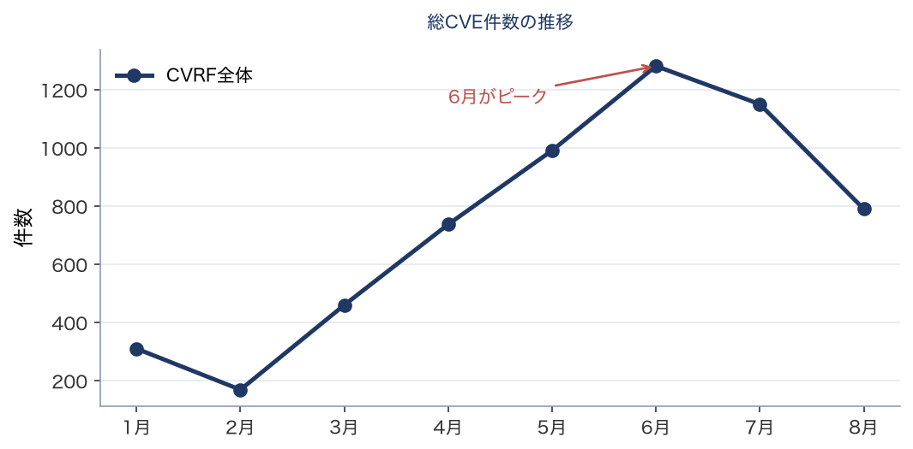
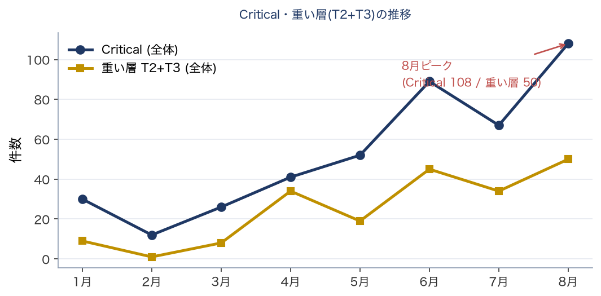
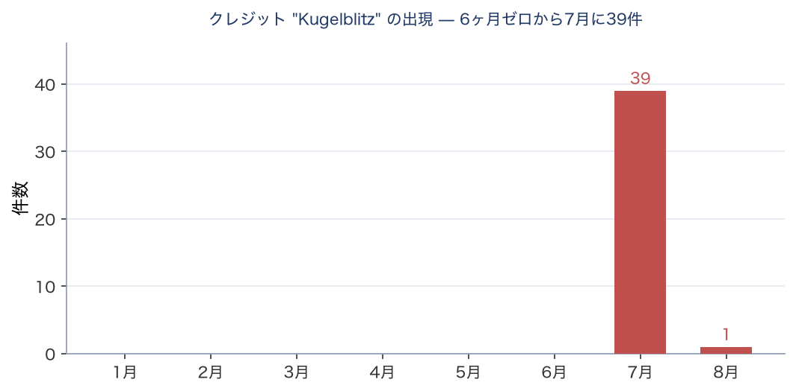
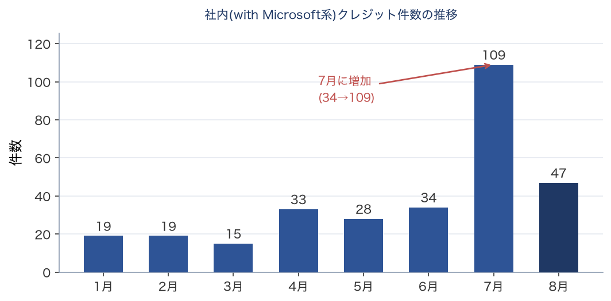

技術レポート（機械生成の事実 + 人間の解釈）
フロンティアAIによる脆弱性発見の急増
2026年8月時点の状況分析と、脆弱性対応にあたる実務者への示唆
脆弱性・パッチ対応の実務者および意思決定者
本レポートの構成と日付について 本レポートは、自動監視スクリプトが生成した事実記録（数値・表・グラフ）に、人間の解釈を差し込んで構成される。 事実データ取得日: 2026-08-13（スナップショットとして凍結） 解釈（本文分析）更新日: 2026-08-13 ※事実は自動、解釈は人間が別途更新する。両者の日付が離れている場合は、解釈が最新の事実を反映していない可能性がある。 |
MSRC の事後改訂について 本レポートは 2026-08-13 確定値に基づく。MSRC は過去月を事後改訂しており（例：6月 CVE 1281→1205）、改訂後データでは異なる結果に見える場合がある。改訂記録は別途保持。 |
【免責・出典】 • 本レポートは、脆弱性対応にあたる実務者を投影した仮想的な書き手による非公式な分析であり、特定の個人・組織の見解ではない。 • 事実データの出典：Microsoft MSRC CVRF、CISA KEV、その他公開情報。 • 分析の生成には AI（大規模言語モデル）を用いている。事実は可能な範囲で検証しているが、正確性・完全性を保証しない。重要な判断は一次情報で確認すること。 • 事実は自動更新されるが解釈は随時更新であり、両者の日付が離れている場合がある（ヘッダ参照）。 • 鮮度：本レポートの事実は 2026-08-13 時点。KEV や PoC 状況は時々刻々変わるため、最新は一次情報を参照。 |
【中立性に関する注記】 本レポートの分析生成には Anthropic 社の AI（Claude）を用いている。本レポートは同社の Project Glasswing 等に言及するが、これは公開情報に基づく中立的な記述を意図したものであり、特定企業を推奨・擁護するものではない。読者は一次情報に当たり、独自に判断されたい。 |
要旨
2026年8月の Patch Tuesday は、CVE 件数で見れば前月から3分の1減った。しかし変更管理とメンテナンスウィンドウを要する「重い層」は本レポートの観測範囲で最多となり、悪用が確認されたゼロデイも前月と同じく存在する。件数の増減は、対応の負荷とも危険度とも一致していない。
そして今月、その件数を分解するために本レポートが用いている製品カテゴリ分類が機能しなくなった。原因は Microsoft 側の表記変更である。上流の集計基準や表記は、説明を伴わずに変わる。 依存している側は、変化を知るか、出力を疑って数え直すまで気づけない。前号は報道各社の集計が一致しないことを通じてこの現象を扱ったが、今月はそれが我々の側で起きた。何が機能しなくなり、どこまで及び、どこには及んでいないかを、本号は先に述べる。
結論（一言） 件数は減り、重さは増えた。そして今月、基準の変更に追随できなかったのはこちら側である。 |
用語解説：「CVRF全体」と「MS本体相当」 CVRF全体 — MSRC の月次文書に載る全 CVE。Edge/Chromium、Azure Linux（旧 Mariner）のパッケージ勧告、Azure クラウドの再掲載を含む。報道各社の集計が一致しないのは、この母集団の切り方が異なるためである。 MS本体相当 — 上記を除いた母集団。今月からこの分離は製品識別子（ProductID を製品名へ解決）で行っており、CVE のタイトル文字列に依存しない。 前号までタイトル文字列に依存していたことが誤りであった点は、前号の訂正ノートに記録している。 |
分析：件数は減り、重さは増えた
今月の数字は、三つの独立した方向から「件数は信号ではない」ことを示している。
|
2026年7月 |
2026年8月 |
CVE 全体 |
1,150 |
790 |
重い層（T2+T3） |
34 |
50 |
Critical |
67 |
108 |
全体は3分の1減り、重い層は最多を更新した。比率にすると重い層は 3.0% から 6.3% へ倍増している。前号は「重い層は単調増加ではなく激しく上下する。いつでも45件級が来うる前提で計画せよ」と書いた。翌月にその上限が更新された。 予測が当たったのではなく、変動の幅が実証されたと読むべきである。
ただし件数から作業量へ直結させることはできない。同じ50件でも、少数の製品に集中しているか多数の製品に分散しているかで、変更管理の手間は変わる。 一般に対象製品数が多いほど、調整すべき系統と検証の組み合わせが増える。本レポートは今月、製品単位の分散度合いを測っていない。件数が最多であることは言えるが、それが前月より重い作業になるかどうかは、この数字だけでは言えない。
悪用されたのは Critical ではない — 二か月連続
今月のゼロデイ3件はいずれも深刻度 Important で、種別は権限昇格と改ざんである。そのうち悪用が確認されているのは1件（WinSock の権限昇格）で、残る2件は公開済みだが悪用は確認されていない。
今月の Critical 108 件のうち、悪用が確認されたものは1件も無い。 前号も同じ形であった。Critical だけを見て優先順位を決める運用は、二か月続けて、実際に悪用されている1件を落とすことになる。
悪用が確認された1件は、Patch Tuesday 当日に CISA KEV へ収載された（是正期限は2週間後）。前号のゼロデイも NVD 公開から KEV 収載まで0日であった。ただし前号の訂正ノートに記録したとおり、MSRC の悪用フラグと KEV は常に一致するわけではない。今月は一致した、というのが正確な述べ方である。
核心：基準は予告なく変わる。今月はこちら側が追随できなかった。
Microsoft は今月から Edge 勧告のタイトル書式を変更した。従来は製品名を含む接頭辞が付いていたが、今月からは CVE 番号と現象の記述だけになっている。この変更に関する告知を、本レポートは把握していない。
その結果、タイトル文字列に依存していた製品カテゴリ分類が、Edge 勧告 39 件のうち 38 件で外れた。前月は 932 件中 931 件が正しく分類できていたものが、こちら側は何も変えていないのに一致率が2%台へ落ちた。エラーは出ない。数字は出続ける。表の見た目も変わらない。
これは前号で訂正した母集団分離の欠陥と、原因が同一である。 母集団分離は製品識別子ベースへ移したため今回の変更に影響されなかったが、製品カテゴリ分類だけがタイトル依存のまま取り残されていた。前号の時点で「同じ問題がいずれ表5でも起きる」と記録していたが、1か月で現実になった。
言えることは限られている。上流が表記や集計の基準を変えるのは通常の運用であり、変更のたびに下流へ告知されるとは限らない。依存している側は、変化を知るか、出力を疑って中身を数え直すまで、それに気づけない。
示唆と推奨アクション
以下は本レポートの分析に基づく推奨であり、確定した規制要求ではない。規制当局の個別の監督上の期待については、一次情報での確認を前提とする。
1. 監視指標の転換（前号からの継続・強化）
「CVE件数」を脅威指標として使うのをやめる。 今月は前号から3分の1減ったが、変更管理を要する重い層は最多を更新した。件数の減少は負荷の減少を意味しない。
代わりに再起動・段階適用を要する層の月次増減を追う。ただしその層の件数も、それ自体では作業量を表さない。 対象が何製品に分散しているかを、自組織の資産構成に照らして確認する必要がある。本レポートは製品単位の分散を測っていない。
2. トリアージを深刻度ラベルから切り離す（前号からの継続・強化）
今月の Critical 108 件のうち、悪用が確認されたものは1件も無い。悪用が確認された唯一の1件は Important である。二か月続けて同じ形が出ている。
移行先は前号と同じく、CISA KEV と EPSS と資産の到達性の組み合わせである。
ただし今月、その EPSS についても同じことが起きている。 悪用が確認され KEV へ収載された当の1件の EPSS は、全 CVE の下位3割に位置する値であった。前号の悪用確認ゼロデイもほぼ同じ位置にあった。予測モデルが低く見積もった CVE が実際に悪用される、という形が二か月続いている。 EPSS は観測される確率の推定であって、既に悪用されているものを指す信号ではない。KEV と併用する意味はここにある。
3. 緊急パッチ SLA（前号の記述を訂正して継続）
今月の悪用確認ゼロデイ（WinSock の権限昇格）は、Patch Tuesday 当日に KEV へ収載され、是正期限は2週間後に設定されている。当日対応の対象である。
この脆弱性の攻撃前提条件は、優先度の判断を誤らせやすい形をしている。 ベンダーの記述によれば、攻撃には対象システム上のローカル認証が必要である。「認証が要るなら優先度は下げてよい」と読みたくなるところだが、必要な権限は一般ユーザー相当で足り、ユーザー操作も不要で、成功すれば SYSTEM 権限を得る。 すなわち、何らかの手段で一般ユーザーとしての足がかりを得た攻撃者にとって、そこから最高権限へ至る経路になる。初期侵入と権限昇格は別の工程であり、後者を「認証が前提だから」と割り引くのは、攻撃の組み立て方と合っていない。
一方で、攻撃の難易度は高いと評価されている。 ベンダーはその理由を明示しており、悪用にはレースコンディションに勝つ必要があるとしている。前提条件は、この両面をあわせて読む必要がある。
前号の記述を訂正する。 前号は「CISA KEV 未登録でも、Microsoft が悪用フラグを立てている時点で待たずに対応する」と書いたが、前号のゼロデイ2件はいずれも開示当日に KEV へ収載されており、この記述の前提は事実と異なっていた。訂正した主張は次のとおりである — 二つの情報源は常に一致するわけではない。どちらかが先に立つことがあるので、片方だけを待たない。
4. Edge/Chromium 自動更新（前号の前提が変わった）
前号は「AI 由来の脆弱性の大半が Edge に集中している」ことを理由にこの項を挙げたが、今月の Edge 勧告は前月の1割以下に減っている。 その理由は本レポートでは特定できていない。
ただし本項の実務上の要点は件数に依存しない。Electron/CEF 埋め込みアプリ（Teams、Slack、VS Code 等）はブラウザの自動更新の恩恵を受けない。 SBOM でこれらの依存を洗い出す価値は、Edge の件数が減った月でも変わらない。
5. 第二波の予測について（前号の見立ての検証）
前号は「8月以降、Glasswing 由来の OSS/他社製品脆弱性の開示が本格化しうる」と書いた。
今月の一次データに、Anthropic および Claude を含むクレジット文字列は1件も無い。 前月は共同クレジットが1件あった。
これは「第二波が来なかった」ことの証明ではない。本レポートが見ているのは MSRC の月次文書だけであり、他社製品や OSS の開示はこの母集団に現れない。見立ての当否は、この一次データでは判定できない。 前号がこの予測を立てた時点で、検証手段を持っていなかったことになる。
6. AI 依存の BCP（前号から継続）
AI をワークフローに組み込む場合、最上位モデルへの依存は BCP の対象と位置づけ、モデル多重化とフォールバック設計を標準とする。
実データ内訳 — 2026年8月 Patch Tuesday
以下は MSRC CVRF v3.0 から取得した一次データの集計である（凍結スナップショット 2026-08-13）。母集団は「CVRF全体」と、Edge/Chromium・Mariner(Azure Linux)・Azureクラウドを除いた「MS本体相当」を併記する。
表1. 深刻度別（母集団2種の併記）
深刻度 |
CVRF全体 |
(%) |
MS本体相当 |
(%) |
Critical |
108 |
14% |
62 |
15% |
Important |
397 |
50% |
357 |
85% |
Moderate |
207 |
26% |
1 |
0% |
Low |
32 |
4% |
0 |
0% |
Unrated |
46 |
6% |
0 |
0% |
合計 |
790 |
100% |
420 |
100% |
表1（深刻度別）の要点
Critical は前月の 67 件から 108 件へ増えたが、CVRF 全体の母数が 1,150 から 790 へ減っているため、比率では 5.8% から 13.7% へ倍以上になっている。ただしこの 108 件のうち 46 件は Azure Linux のパッケージ勧告であり、MS 本体相当の Critical は 62 件である。前月の Unrated が全体の 37% を占めていたのに対し今月は 6% 未満で、これは Edge 勧告の減少と対応している。
表2. 再起動クラス別（実務負荷の軸）
クラス |
内容 |
CVRF全体 |
MS本体相当 |
T3 |
段階展開必須（Boot/Crypto） |
10 |
2 |
T2 |
変更管理・メンテ枠が必要 |
40 |
40 |
T0/T1 |
自動更新・定常パイプライン |
740 |
378 |
表2（再起動クラス別）の要点
T2 と T3 を合わせた「重い層」は 50 件で、本レポートの観測範囲（2026年1月以降）で最多である。母数が減っているため比率では前月の 3.0% から 6.3% へ倍増した。この層は変更管理とメンテナンスウィンドウを要するため、件数が減った月でも作業量は増えうる。ただし本レポートは、この 50 件が何製品に分散しているかを測っていない。 実際の作業量は対象製品数と自組織の資産構成に依存するため、件数の最多をもって前月より重いと断ずることはできない。
表3. 発見者大分類（CVRF全体）
区分 |
件数 |
(%) |
備考 |
クレジット無し |
385 |
49% |
自動化を含む可能性（断定不可） |
外部研究者（実名） |
275 |
35% |
実名の外部発見者 |
匿名（Anonymous） |
49 |
6% |
名乗り出た匿名 |
社内（with Microsoft等） |
47 |
6% |
Kugelblitz/MORSE/WARP・ACS等を含む |
ハッシュ識別子 |
34 |
4% |
MSが匿名化した識別子（正体不明） |
表3（発見者大分類）の要点
クレジットのない CVE は 385 件で、CVRF 全体の 48.7% である。前月とほぼ同水準であり、全体としては前号が「棄却③」として結論の根拠から外した指標の挙動と変わらない。ただし Critical に限ると様相が異なる（表4 参照）。
表4. Critical脆弱性の発見者内訳（集約・実名なし）
発見主体 |
Critical件数 |
傾向 |
クレジット無し |
51 |
自動化の可能性（断定せず） |
外部研究者（実名） |
41 |
Criticalの多数派 |
社内（ACS/WARP/MORSE等） |
7 |
少数（Networking/Hyper-V中心） |
匿名（Anonymous） |
7 |
— |
ハッシュ識別子 |
2 |
— |
Kugelblitz（Edge・参考） |
0 |
Criticalには出現しない（面のみ） |
件数のみ（個人実名は事実データに保存しない）。上4〜5行はバケット別で合計=Critical総数。Kugelblitz 行は横断参考（加算しない）。個別の研究者名・CVE例は解釈側に散文で記載。
表4（Critical脆弱性の発見者内訳）の要点
Critical 108 件のうち、クレジットのないものが 51 件（47%）ある。前月は 67 件中9件（13%）であった。これは取得タイミングのラグではない。 凍結の前日と当日で24時間の間隔を置いて再取得したが、クレジットのない件数は1件も動かなかった。当月の実態と見るのが妥当である。ただしこの跳ね上がりが何を意味するかは、この数字だけでは分からない。 社内発見が謝辞に載らなかったのか、報告の慣行が変わったのか、区別できない。前号の訂正ノートで確立した規律のとおり、謝辞の不在から発見主体を推論しない。
表5. 製品カテゴリ別（CVRF全体）
カテゴリ |
件数 |
(%) |
その他 |
334 |
42% |
Office/Word/Excel/PPT |
90 |
11% |
Win Services/Components |
73 |
9% |
Networking |
65 |
8% |
Kernel/Driver |
51 |
6% |
Graphics/Media |
44 |
6% |
SharePoint |
27 |
3% |
.NET/Dev |
24 |
3% |
Microsoft (other) |
24 |
3% |
Azure/Cloud |
17 |
2% |
RDP/Remote |
16 |
2% |
Auth/Identity |
10 |
1% |
Exchange |
7 |
1% |
SQL/Dynamics |
3 |
0% |
Hyper-V/Virtual |
2 |
0% |
Boot/Crypto (T3) |
2 |
0% |
Edge/Chromium |
1 |
0% |
※この表のカテゴリ分類は当月、部分的に機能していない。分類は CVE のタイトル文字列に依存しており、Microsoft が 2026年8月に Edge 勧告のタイトル書式を変更した（`Chromium: CVE-…` → `CVE-…`）ため、Edge 勧告 39 件のうち 38 件がタイトルから製品を判別できず、他のカテゴリおよび「その他」に散っている。同様に、Azure Linux のパッケージ勧告はタイトルが上流 OSS のものであるため、その一部（当月 35 件）が Microsoft 製品のカテゴリに混入している。したがって当月の表5 は、カテゴリ間の内訳としても、前月との比較としても使えない。
一方、母集団の分離（本体相当 420 件 / 除外 370 件）はこの欠陥の影響を受けない。分離は CVRF の製品識別子を製品名に解決して判定しており、タイトルを見ないため、書式の変更に左右されない。表1〜表4 および推移表はこの分離に基づく。当月の「その他」334 件の内訳は、Azure Linux 296 件・Edge 29 件・Microsoft 本体 9 件である。
分類器を製品識別子ベースへ移す作業は次号以降に行う。当月に実施しないのは、分類器の変更と月次の凍結を同じ変更に含めると、数値の変動がどちらに由来するか切り分けられなくなるためである。
表5（製品カテゴリ別）の要点
当月、この表のカテゴリ分類は部分的に機能していない。 分類は CVE のタイトル文字列に依存しており、Microsoft が今月から Edge 勧告のタイトル書式を変更したため、Edge 勧告の大半がタイトルから製品を判別できず他のカテゴリへ散っている。Azure Linux のパッケージ勧告も上流 OSS のタイトルを持つため、その一部が Microsoft 製品のカテゴリへ混入している。詳細は表の直後の注記に譲る。カテゴリ間の内訳としても、前月との比較としても、この表は当月使えない。 一方、母集団の分離（本体相当と除外）は製品識別子ベースであり、この影響を受けない。表1から表4と推移表はその分離に基づいている。
補遺：「AI関連」を示唆するクレジットの棚卸し
前号は「Kugelblitz」というクレジット名が1月0件・4月0件・7月39件と不連続に出現したことを記録し、当初これを Microsoft 内製 AI ツールの痕跡と断定したうえで、一次情報による裏取りでその断定を撤回した。今月の Kugelblitz は1件である。
ただしこの減少は解釈できない。前月の39件はすべて Edge 勧告に紐づいていたが、その Edge 勧告自体が今月は前月の1割以下に減っている。したがって Kugelblitz の減少が「その主体の活動が縮小した」のか「対象となる Edge 脆弱性が今月ほぼ無かった」のかは、この数字だけでは区別できない。区別できないことを、そのまま記録する。
今月の一次データには、AI を示唆する別のクレジット文字列が複数ある。日本語で「AIフィジカルインターフェイス二号機」とするものが13件、英語で "AI's physical interface 001" とするものが1件ある。番号が異なるため、同一主体の日英表記ではなく、別個体を指す番号付きの命名に見える。 前号の Kugelblitz と同じ性質の対象であり、正体は断定しない。 現時点で言えるのは、クレジット文字列がこう書かれている、ということだけである。
このほか、文字列に AI を含むクレジットは複数あるが、その大半は組織名や研究室名に偶発的に含まれるものであり、前号と同じく AI 由来分の指標としては使えない。
なお、今月の一次データに Anthropic および Claude を含むクレジット文字列は1件も無い。 前月は共同クレジットが1件あった。
過去データとの比較 — 2026年1月〜8月の推移
今月から、月をまたぐ比較の条件が初めて揃った。ただし揃ったのは前月と今月の間だけである。
前号の訂正ノートで公表したとおり、月次の「MS本体相当」の推移は、実質「Azure Linux のパッケージ勧告の追記がどこまで進んだ時点で取得したか」の推移になっていた。原因は二つ、指標の定義の欠陥と、各月が Patch Tuesday から異なる距離で凍結されていたことである。今月は分類器を製品識別子ベースへ移し、かつ前月と同じ Patch Tuesday 翌日の距離で凍結している。したがって前月と今月だけが比較可能であり、6月以前とは比較できない。 推移表から「MS本体相当」の列を落としているのはこのためである。以下の図で並べている軸は、いずれも分類器に依存しない。
推移表（取得ラグに頑健な実数のみ）
月 |
CVE全体 |
Critical |
重い層(T2+T3) |
Kugelblitz |
社内(MS) |
1月 |
310 |
30 |
9 |
0 |
19 |
2月 |
169 |
12 |
1 |
0 |
19 |
3月 |
460 |
26 |
8 |
0 |
15 |
4月 |
737 |
41 |
34 |
0 |
33 |
5月 |
991 |
52 |
19 |
0 |
28 |
6月 |
1281 |
89 |
45 |
0 |
34 |
7月 |
1150 |
67 |
34 |
39 |
109 |
8月 |
790 |
108 |
50 |
1 |
47 |
※「CVE本体（MS本体相当）」の列は載せない。母集団の分類器を 2026-Aug から v2（影響製品ベース）に替えており、v1（タイトルベース）で凍結した月と同じ列に並べると、分類器を替えたことが「MS本体相当の急変」という推移に見えるため。当月の本体側の内訳は上の表に載せている（単月なので版の混在は起きない）。

図1: 総CVE件数の推移（CVRF全体）
図1（総CVE件数）の解釈
今月は前月から3分の1減った。ただし前号が示したとおり、この曲線は防御負荷とも危険度とも対応しない。母集団に何が含まれるかが月ごとに変動するためで、その変動幅は本レポートが凍結値を確定した後も続いている。

図2: Critical件数・重い層(T2+T3)の推移
図2（Critical・重い層）の解釈
Critical と重い層はいずれも増えている。総件数が減る月に両者が増えるという形は、本レポートの観測範囲では今月が初めてである。重い層は最多を更新した。前号が「45件級が来うる前提で」と書いた上限は、翌月に更新された。ただし前述のとおり、件数の最多がそのまま作業量の最大を意味するわけではない。

図3: クレジット「Kugelblitz」の月次出現
図3（Kugelblitz）の解釈
7月に突出した後、今月は1件へ戻った。ただし補遺に述べたとおり、この減少は Edge 勧告そのものの減少と分離できない。曲線の形から主体の活動を読み取ることはできない。

図4: 社内(with Microsoft系)クレジット件数の推移
図4（社内発見）の解釈
Microsoft 社内発見のクレジットも前月から大きく減っている。Kugelblitz と同じく Edge 勧告の減少と連動している可能性があるが、両者を結びつける根拠は本レポートにはない。
推移から読み取れること（要約） 件数の減少は、負荷の減少でも危険度の低下でもない。今月は件数が減り、重い層が最多を更新した。ただし件数から作業量を直接導くこともできない。 総件数・Critical・重い層・Kugelblitz・社内発見は分類器に依存しないため8か月分を並べられるが、「MS本体相当」は前月と今月の2点しか比較できない。 比較できないものを比較できるように見せない、というのが前号の訂正の帰結である。この制約は不具合ではない。 |
KEV / EPSS — 即応の優先度づけ
以下は対象CVE（T2/T3 ∨ Critical ∨ 外部研究者クレジット）を CISA KEV・FIRST EPSS と照合した結果。KEV = 悪用確認の離散的事実（通知トリガー）。EPSS = 悪用確率の推定（取得時点の値・日々変動・参考）。数値から発見主体・因果は断定しない。
即応対象 — CISA KEV 収載（取得 2026-08-13）
CVE |
製品名 |
深刻度 |
再起動クラス |
CVE-2026-68820 |
Windows Ancillary Function Driver for WinSock |
Important |
T0/T1 |
EPSS 上位 — 悪用確率の推定（取得時点 2026-08-12）
CVE |
製品カテゴリ |
EPSS |
パーセンタイル |
CVE-2026-61358 |
Win Services/Components |
0.0331 |
87.4% |
CVE-2026-66804 |
Win Services/Components |
0.0303 |
86.3% |
CVE-2026-62696 |
Win Services/Components |
0.0285 |
85.5% |
CVE-2026-65775 |
Kernel/Driver |
0.0231 |
81.9% |
CVE-2026-62893 |
Win Services/Components |
0.0185 |
77.2% |
CVE-2026-61930 |
Kernel/Driver |
0.0175 |
75.9% |
CVE-2026-62741 |
Networking |
0.0175 |
75.9% |
CVE-2026-62713 |
Kernel/Driver |
0.0175 |
75.8% |
CVE-2026-65665 |
SharePoint |
0.0173 |
75.6% |
CVE-2026-59124 |
Microsoft (other) |
0.0172 |
75.4% |
CVE-2026-62783 |
RDP/Remote |
0.0164 |
74.2% |
CVE-2026-62888 |
Graphics/Media |
0.0164 |
74.3% |
CVE-2026-64901 |
SharePoint |
0.0158 |
73.3% |
CVE-2026-66808 |
SharePoint |
0.0158 |
73.2% |
CVE-2026-66805 |
SharePoint |
0.0158 |
73.2% |
※EPSS は毎日更新され値が変動する。上表は取得時点（2026-08-12）のスナップショットであり、単独のトレンド指標として用いない。通知トリガーには KEV のみを使う（EPSS は使わない）。
※製品名（KEV表）・製品カテゴリ（EPSS表）は CVRF（2026-08-13 凍結スナップショット）由来。KEV 収載状況・EPSS 値とは別ソース・別時点である。カテゴリは表5と同一の分類による。製品名/カテゴリの数値から発見主体・因果は断定しない。
別紙：調査手順・出典・アカウンタビリティ記録
本別紙は、本編の結論に至る調査過程を、途中で棄却・修正した仮説を含めて記録する。分析の再現可能性と説明責任の確保を目的とする。
1. 調査の目的と問い
本号の問いは前号から引き継いでいる — 月次の脆弱性データから、対応の負荷と実際の危険度について何が言えるか。加えて本号は、前号で訂正した指標の定義が、訂正後に何を示すかを確認する回でもある。
2. 情報源
本号は一次データのみに依拠しており、報道等の二次情報を参照していない。前号は件数の集計が報道各社で一致しないこと自体を論点としたため二次情報を横断したが、本号にはその必要がなかった。
MSRC CVRF API v3.0 — 月次のセキュリティ更新を CVE 単位の構造化データで提供。発見者クレジット、深刻度、悪用状況、対象製品、CVSS ベクタ、FAQ を含む。
CISA KEV カタログ — 悪用が確認された脆弱性の一覧。当月の CVE との突合に使用。
FIRST EPSS — 30日以内に悪用活動が観測される確率の推定。当月の CVE に対する値を取得。
KEV との突合は、独立した二つの経路（カタログへの直接照会と、収集パイプラインによる自動突合）で別の日に行い、同じ結果を得ている。
3. データ取得方法
MSRC CVRF API から取得担当者のローカル環境で一次データを取得し、凍結した。分析ロジックの設計と結果の解釈に AI が関与しているが、数値そのものは取得担当者の環境での実行結果である。
取得の時点について、今月は重要な発見があった。 詳細は第5節に記す。
4. 分析手順（時系列）
Patch Tuesday 当日に一次データを取得。しかし後述のとおり、この時点で取得したものは当月の Patch Tuesday 本体とは別内容であった。
翌日と翌々日に再取得し、24時間の間隔を置いて主要指標が動かないことを確認したうえで凍結した。
凍結値に対して製品識別子ベースの母集団分離を適用。前号までのタイトル依存の分離とは別の分類器である。
KEV と EPSS を当月の CVE に対して取得。
製品カテゴリ分類の出力を目視し、Edge 勧告の分類が崩れていることを発見。原因を上流の表記変更まで特定。
悪用が確認されたゼロデイについて、CVRF の CVSS ベクタ・Threats・FAQ の原文を確認し、攻撃前提条件の記述を本文に反映した。
5. 調査過程で棄却・修正した指標【重要】
説明責任の観点から、当初採用したが後に棄却・修正した判断を記録する。
発見① Patch Tuesday 当日に取得した文書は、当月の Patch Tuesday 本体ではなかった。 当日に取得した文書は CVE 1,517 件を含み、その 98.6% が除外対象（大半が Azure Linux のパッケージ勧告）であった。翌日に再取得すると 790 件へ減少した。件数が増えるのではなく減ったことが決定的で、これは「不完全な文書を取った」のではなく「別の内容の文書を取った」ことを意味する。当初これをクレジット付与の遅れと解釈しかけたが、母集団そのものが違っていた。当日の値で凍結していれば、本号の全数値が別の文書に基づくものになっていた。
修正② Critical の未クレジット率の跳ね上がりを、取得ラグと解釈しかけた。 当初これを取得タイミングのラグと見立てたが、24時間の間隔を置いた再取得で1件も動かなかったため、この見立ては成立しない。当月の実態として記録し、その意味は断定していない。 これは前号の「棄却③」と同じ教訓の再確認である — 発見者クレジットは外部発見・内製発見・クレジット辞退が混在し、集計レベルで発見主体を分離する用途には適さない。
修正③ 製品カテゴリ分類の一致率の崩壊を、当初 Edge の消失と誤読した。 Edge 勧告が前月の 473 件から1件へ落ちたように見えたため、当初これを実際の減少と受け取った。製品識別子ベースで数え直した結果、実際は 39 件であり、差は分類器が追随できていないことによるものであった。分類器が追随できていない月には、その分類器が出す数字を根拠に何も言えないという当然の帰結を、一度誤読してから確認したことになる。
継承④ 状況証拠だけで実体に結びつけない（前号の棄却⑤）。 前号は Kugelblitz を特定の AI ツールと断定し、一次情報で反証されて撤回した。この規律は本号でも生きている。今月の「AIフィジカルインターフェイス二号機」および "AI's physical interface 001" についても、正体を断定していない。
記録⑤ 同一文書内で、悪用状況の記述が一致していない。 悪用が確認されたゼロデイについて、CVRF の Threats は悪用済み・悪用を検知と記す一方、同じ文書の CVSS Temporal は悪用コードの成熟度を「未実証」としている。本レポートの悪用フラグは前者から導出しており、CVSS の当該フィールドは参照していない。どちらが正しいかの判断は加えていない。 同一ベンダーの同一文書内で、悪用に関する二つのフィールドが食い違うという事実をそのまま記録する。悪用状況を機械的に読む場合、どのフィールドを見るかで結果が変わる。
6. 最終的に依拠した根拠と、その限界
依拠した根拠（確度：高）
凍結値（CVE 全体・本体相当・深刻度・再起動クラス・発見者分類）は一次データからの機械集計であり、24時間の間隔を置いた再取得で主要指標が変動しないことを確認済み。
母集団の分離は製品識別子ベースであり、当月の表記変更の影響を受けない。全件が解決可能で、未解決の製品識別子は0件であった。
悪用が確認されたゼロデイの KEV 収載は、独立した二経路で同じ結果を得ている。
同ゼロデイの攻撃前提条件（ローカル認証が必要・一般ユーザー権限で足りる・ユーザー操作不要・成功時に SYSTEM 権限・レースコンディションを要する）は、CVRF の CVSS ベクタと FAQ の原文に基づく。
限界（確度：未確定・要注意）
製品カテゴリ分類は当月機能していない。 表5 とその内訳に依拠する主張は本号にない。
重い層の件数は測っているが、対象製品の分散度合いは測っていない。 件数の最多をもって作業量の最大とすることはできない。
Critical の未クレジット率の跳ね上がりの原因は不明。 ラグでないことは確認したが、それ以上は言えない。
Kugelblitz および「AIフィジカルインターフェイス二号機」の正体は不明。 前号と同じく、断定しない。
月をまたぐ「MS本体相当」の比較は、前月と今月の2点のみで成立する。 6月以前は分類器も凍結距離も異なる。
前号が立てた「第二波」の見立ては、本レポートが見ている母集団では判定できない。
悪用が確認されたゼロデイについて、実際の攻撃事例・観測された手口を本レポートは確認していない。 攻撃前提条件はベンダーの記述に基づく評価であり、実地の観測ではない。
7. 再現手順
本号の数値は、公開リポジトリ msrc_monitor の収集・凍結ツールで再現できる（要 Python 3.12・依存は requirements.txt を参照、MSRC API に到達可能なネットワーク）。なお MSRC は過去月を事後改訂するため、完全に同一の値が再現されるとは限らない。
① 当月の一次データ取得: python collect.py
② 取得値の確認と凍結（凍結は人間が実行する。既に凍結済みの月は拒否される）: python freeze_month.py 2026-Aug --dry-run のうえ python freeze_month.py 2026-Aug
③ KEV/EPSS の突合: python enrich.py 2026-Aug
④ 発見者クレジットの集計（CVE 単位・重複排除済み）: state/2026-Aug.json の credit_counts / finder_bucket を参照
解釈の散文は月ごとに interpretation/<年-月>/ に分かれており、当月以外のものを混ぜてビルドすることはできない。
確度の階層（本レポートの主張の格付け） 【高】 件数が減り重い層が最多を更新した／悪用が確認されたゼロデイは Important であり Critical 108 件に悪用確認は無い／その1件は開示当日に KEV へ収載された／同ゼロデイは一般ユーザー権限とユーザー操作なしで SYSTEM 権限に至るが、レースコンディションを要する（いずれもベンダーの記述）／母集団分離は製品識別子ベースで全件解決した 【中】 予測モデルが低く見積もった CVE が実際に悪用される形が二か月続いているという観察（2か月の観測に基づく） 【未確定】 Critical の未クレジット率が跳ね上がった原因／Kugelblitz および「AIフィジカルインターフェイス二号機」の正体／Edge 勧告が減った理由／重い層の対象製品の分散度合い 【要注意】 表5（製品カテゴリ別）は当月機能していない。 カテゴリ間の内訳にも前月比較にも用いないこと。母集団の分離（本体相当と除外）は影響を受けない／同一 CVRF 文書内で、悪用状況を示す二つのフィールドの値が一致していない（第5節・記録⑤） |
本レポートはAIアシスタント（Claude）との対話を通じて作成された。一次データの取得・実行は取得環境で行われ、数値はその実行結果に基づく。解釈・分析にはAIの寄与が含まれるため、重要な意思決定に用いる際は一次情報での再確認を推奨する。